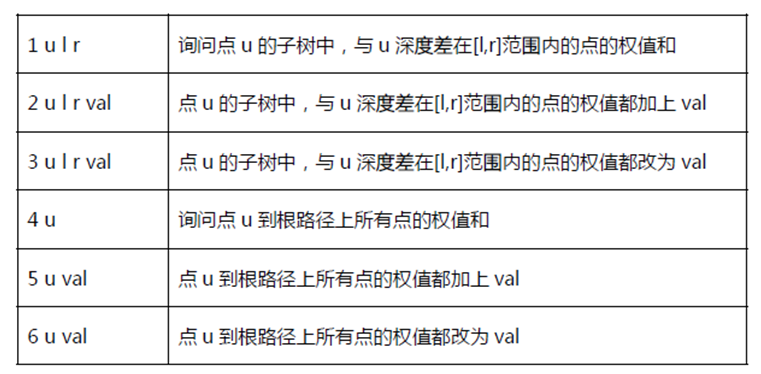

BZPRO
#5355. Query on a tree
内存限制：512 MiB
时间限制：30 Sec
提交
提交记录
讨论
题目描述
给出一棵n 个节点的树，标号为1~n，每个点的父亲标号一定小于他的标号，当然1
号节点就是这棵树的根
现在你需要执行m 次操作，操作有6 种，如下：
注：①询问中[l,r]范围不一定全部有节点存在（详见样例）
②l,r∈Z 且l,r∈[0,n]
③val∈Z 且val∈[1,2*10^5]

输入格式
第1 行，一个整数T，为测试点编号
第2 行，一个正整数n
接下来的n-1 行，每行一个正整数fai 为i 号点在树上的父亲
第n+2 行，一个正整数m
接下来m 行，每行表示一个操作，格式如题中表格所示
N,M<=10^5
输出格式
对于每个1、4 操作输出一行，为该询问的答案
样例
样例输入
0
5
1
1
2
2
6
2 1 0 1 1
1 1 0 0
3 2 0 2 1
5 5 1
6 3 2
4 5
样例输出
1
6
数据范围与提示